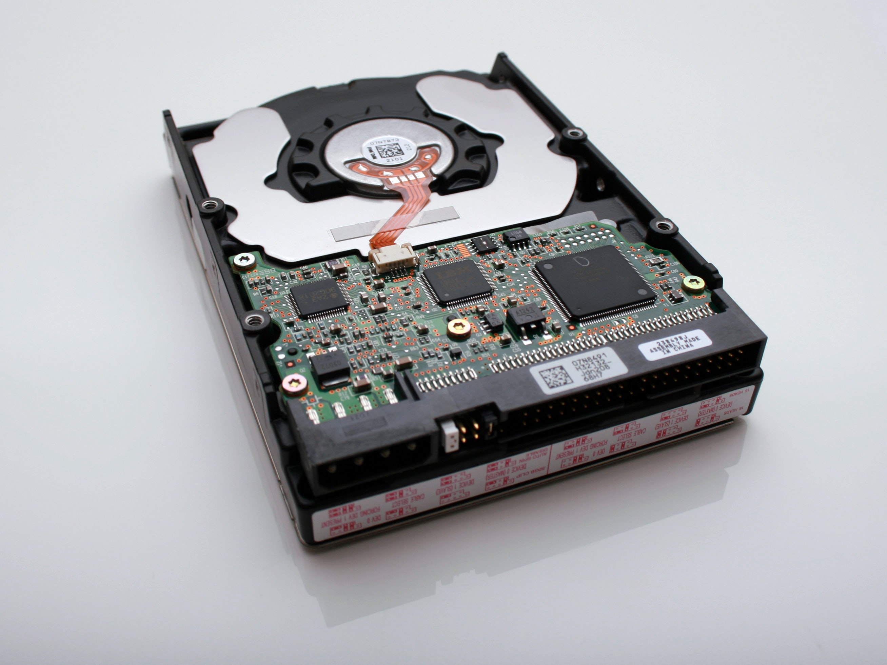

HDD는 Hard Disk Drive. 줄여서 Hard Disk 또는 HDD, 하드 
컴퓨터의 주요 부품 가운데 하나로, 보조기억장치이다. 주기억장치를 보조하는 역할을 하는 부품이라는 의미이지만, 그것보다는 비휘발성 데이터 저장소로서의 역할이 훨씬 더 중요하다. 비휘발성 데이터 저장소 가운데 가장 대중적이고 용량 대비 가격이 가장 저렴하다. 다만 예로 LTO6 이상의 테이프는 단품 가격이 HDD보다 싸지만 전용 드라이브 가격이 비싸다. 테이프가 HDD보다 싸지는 건 전용 드라이브를 보유하고 있거나, 테이프를 구입함으로써 얻는 비용절감의 가격차가 테이프 드라이브 한 대와 맞먹어야 한다. 당세대 최신 테이프 드라이브는 수백만 원을 호가한다.
데이터가 손실될 경우 어떤 제조사에서도 책임지지 않는다. 따라서 중요한 자료는 다른 곳에 백업을 철저히 하자.
데이터 복구에는 HDD 구입가의 수십, 수백 배 이상의 비용이 든다. 시게이트에서 판매하고 있는 Rescue and Replace
옵션도 결국 시게이트의 자체적인 복구 공장을 저렴하게 이용하는 일종의 보험일 뿐이다.
원래 이름은 자기 디스크(Magnetic Disk Drive, MDD)였는데, 나중에 마찬가지로 자기를 이용하는 플로피
디스크 드라이브(Floppy Disk Drive, FDD)가 나오면서 구분을 위해 딱딱한 디스크라는 뜻으로 하드 디스크
드라이브(Hard Disk Drive)로 바꿨다. 플로피는 디스크 드라이브에 삽입하는 기록 매체인 디스켓이
팔랑팔랑하다는 의미. 요새는 FDD가 거의 사용되지 않기 때문에 솔리드 스테이트 드라이브
(Solid State Drive, SSD)에 대립되는 명칭으로 받아들여진다.